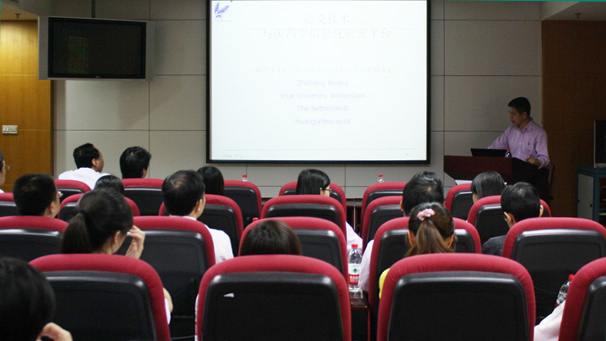

药学部举办医药学研究信息化国际学术交流讲座
发布时间：2014-12-03来源：药学部作者：宣传部浏览次数：161

9月20日，由我院药学部主办、网络中心协办的专题讲座《语义技术与医药学信息化研究平台》在外科楼二楼会议室举行，来自荷兰阿姆斯特丹自由大学计算机系高级研究员、著名的语义学专家黄智生教授作专题报告，我院来自药学部、信息科、临床学科的近百人参加了此次讲座。
黄智生教授长期从事人工智能逻辑与推理、智能多媒体技术和语义万维网与本体技术的研究，已发表了百余篇的学术论文和论著，主编《生物医学语义技术》。曾承担由欧盟、荷兰、英国和国家自然科学基金等多个基金支持的项目，现为国际本体技术顾问委员会健康与生命科学领域推广活动主席，主持欧盟第七框架重大语义技术项目LarKC中推理工作组的工作。
会上，药学部主任陈东生教授首先对黄教授的到来表示热烈欢迎，并向大家介绍了黄教授的主要研究方向。
接着，黄教授以生动平实的语言介绍了信息学最新技术——语义技术在医药学中的应用，包括语义技术在生命科学上的应用、语义技术与现代医学信息系统、基于语义的医学文献检索、语义技术与基因研究、基于语义技术的药物研发平台、以及语义技术用于临床研究的知识管理与决策支持系统等内容。对于这个十分前沿的技术，与会者表现出极大的热情与兴趣，就平时医药学研究中可能与语义技术相关的交叉学科内容，在会中和会后的互动环节中与黄教授热烈讨论。
会后，黄教授在陈东生主任的陪同下参观考察了药学部，并与药学部的相关人员进行了深入探讨。据悉，我院药学部近年来学科发展态势良好，先后建立了包括合理用药监测、个体化用药基因监测、药物不良反应监测、药物临床试验研究、药品上市后安全性再评价等药学研究信息平台。黄教授对药学部的现有成果进行了充分肯定，并提出了进一步学术课题合作的设想。
（华小黎，胡艳珂，陈晨）